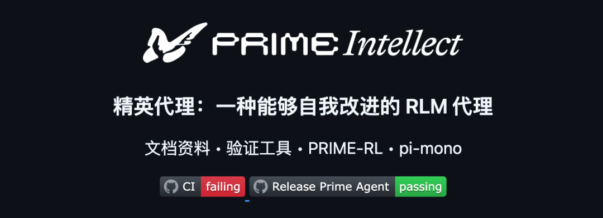
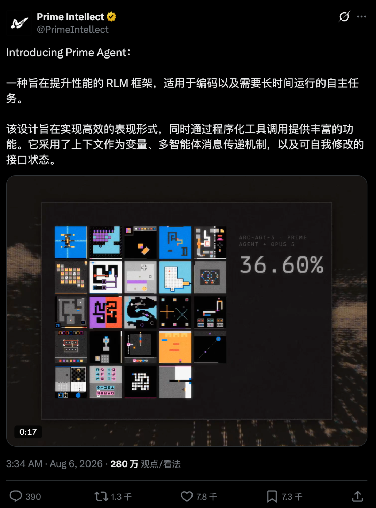
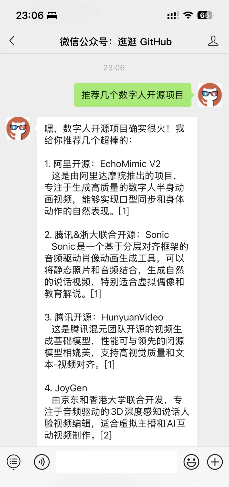

pi 这个开源 Agent 的含金量还在上升。
基于 pi 构建的一个新项目 Prime Agent，最近登上了 GitHub 热榜。
目前已经拿下了 17.7K 的 Star。
这个项目的定位是：一款面向编程、研究和长时间自主任务的开源 Agent。
它能把一个复杂任务拆给多个子 Agent，终端断开后继续工作，还会从自己的执行记录里总结经验，更新下一次做事的方法。

01
开源项目简介
Prime Agent 是一个开源的 AI Coding 和研究 Agent，底层基于 pi 构建。
它主要想让 Agent 持续处理复杂任务。

普通的代码问答通常很快就能结束。
大型重构、长上下文分析、自动评测和研究实验会经历更长的处理链路，中间还要进行多轮搜索、修改、测试和返工。
任务一长，就会出现麻烦。
上下文越来越大，前面的信息容易丢。子任务越来越多，需要反复协调。终端一关，会话也可能跟着停下来。
即使这次终于做完了，下次遇到同类问题，很多经验还得重新教一遍。
Prime Agent 围绕两个核心设计展开：Recursive Language Model（RLM）和Continual Harness。
RLM：前者负责把上下文、工具和子 Agent 变成可编程对象
Continual Harness：后者负责保存提示补充、记忆、技能和子 Agent 配置，让工作方法可以持续积累。
开源地址：https://github.com/PrimeIntellect-ai/prime-agent它的官方成绩也挺抢眼。
Prime Intellect 在发布文章中说，Prime Agent 搭配 Opus 5，在 ARC-AGI-3 上拿到了95.5% RHAE Best@1。
团队公布的三次结果分别是 95.0%、95.2% 和 95.5%，最高结果略高于其引用的 95.4% 人类专家基线。
官方还测试了长上下文检索、模拟器编写、GPU Kernel、Factorio 和 MazeBench 等任务。
项目团队自己也提到，目前还没有模型围绕 Prime Agent 这套 Harness 训练过。
这组成绩可以看出运行框架对模型表现的影响，不过先别急着拿它给 Codex 或 Claude Code 排座次。
评测来自项目团队，模型、提示词、token 预算和运行方式都会影响结果，社区里对比较口径也有不少讨论。
02
它是怎么把长任务跑下去的
Prime Agent 的功能不少，真正值得关注的是下面这 4 部分。
① 上下文变成了可以操作的变量
Prime Agent 给模型提供的内置工具只有一个：ipython。
文件读取、Shell 命令、数据处理、技能调用和子 Agent 调度，都从这个持久化的 IPython 环境开始。
这个环境不会在每次工具调用后清空。
变量、函数、解析结果等可以保留下来，经历上下文压缩后仍然能继续使用。
比如模型读取了一批配置文件，可以把筛选结果保存在变量里。
后面要继续分析时，调用已有变量即可，不必把同一批内容反复塞进聊天上下文。
项目把这个思路叫作 prompt-as-a-variable。
它让模型通过程序搜索和处理自己的工作材料。
Prime Agent 团队认为，这种方式能够减少大量工具调用产生的文本开销，把更多 token 留给真正的推理和决策。
② 子 Agent 可以像函数一样调用
Prime Agent 在 IPython 环境里预置了 rlm(...)
主 Agent 可以用它创建子 Agent，把代码审查、测试检查和资料检索拆开处理。
auth = await rlm("检查认证流程，找出潜在问题，完成后把结果发给我",name="auth-reviewer",)tests = await rlm("检查测试覆盖率，列出缺少的关键用例，完成后把结果发给我",name="test-reviewer",)
每个子 Agent 都有独立的上下文、会话目录和历史记录。
rlm(...) 在任务被接收后就会返回一个东西，主 Agent 不用停在原地等待，可以继续处理其他事情。
子 Agent 做完后，通过消息把结果发回来。
主 Agent 还能继续追问，也可以让兄弟 Agent 交换信息。
这种设计很适合复杂仓库。
你可以让三个子 Agent 分别检查登录模块、API 和测试，主 Agent 留出上下文负责汇总结果、修改代码和跑验证。
③ 做过的任务，可以沉淀成下一次的经验
Prime Agent 的另一个核心设计是 Continual Harness。
它把 Harness 状态拆成几类内容：提示补充、记忆、技能说明和可复用的子 Agent 配置。
这些内容会写入磁盘，默认在当前会话中跨轮次保留；显式设为全局的稳定经验，还可以跨会话复用。
当 Agent 在任务里发现某个问题反复出现，可以调用 /refine 回顾执行轨迹，把有效方法存下来。
比如某个项目的集成测试经常出现同一种不稳定错误。
Prime Agent 可以把识别、重试和验证步骤整理成记忆，或者进一步做成一个可复用技能。
这里的自我改进发生在 Harness 层，模型权重不会跟着更新。它积累的是做事方法，以及下一次任务可以调用的上下文。
/refine 也不会重写基础系统提示。它倾向于做小范围更新，记录触发原因和产生的结果，并通过快照支持回滚。
④ 终端断开，任务还能继续推进
Prime Agent 默认通过后台管理会话。
关掉终端界面后，正在运行的 worker、IPython 状态和子 Agent 仍然由后台进程管理。之后可以重新连接，继续查看进度或者补充要求。
prime-agent agentsprime-agent attach <agent>prime-agent status
它还提供了持久目标、心跳、定时任务和自主模式。
持久目标负责保存当前要完成的事情。
心跳和定时任务可以定期检查测试、训练或部署状态。
自主模式会在当前轮结束后继续推动任务，直到质量门槛通过或者预算耗尽。
自主模式可以设置最大轮数、token 上限和运行时间，也能把测试命令设为完成条件。
例如你让它完成一次仓库迁移，并要求 npm run check 必须通过。
只要代码发生了变化，质量门槛仍然失败，它就能带着失败信息进入下一轮修改。
这套机制更接近长期任务的真实工作方式。目标要记住，进度要定期检查，子任务需要并行推进，最终还得用测试结果验收。
03
五分钟快速上手
Prime Agent 的稳定版目前支持 macOS 和 Linux，安装命令很短：
curl -fsSL https://app.primeintellect.ai/prime-agent/install.sh | sh安装完成后，进入你想让它处理的项目目录：
cd /path/to/projectprime-agent第一次启动时，输入 /login 配置模型服务。
它内置了 ChatGPT Plus/Pro、Claude Pro/Max 和 GitHub Copilot 等订阅登录方式，也支持通过 API Key 接入其他模型提供商。
接下来直接交代任务即可，比如：
分析这个项目的认证模块和测试覆盖率，把两项工作交给独立的子 Agent。汇总结果后修复最重要的问题，并运行现有测试验证修改。如果想从源码运行，需要 Node.js 22.8.0 或更高版本：
git clone https://github.com/PrimeIntellect-ai/prime-agentcd prime-agentnpm ci./prime-agent.sh
这里要留意一下权限。
Prime Agent 会以当前账户的权限执行模型生成的 Python 和项目命令，后台进程提供的是会话恢复和生命周期隔离，不是安全沙箱。
第一次体验时，建议用一次性仓库、干净的 Git worktree，或者其他方便检查和恢复的环境。
以前聊 AI 编程，大家最关心的是底层用了哪个模型。
现在，同一个模型放进不同的 Harness，表现可能差出一大截。
上下文怎么保存，工具怎么调用，子 Agent 怎么协作，任务中断后怎么恢复，失败经验能不能留下来，这些都会影响最后的结果。
Prime Agent 把这些能力放进一个可编程、可持久化、可继续调整的运行环境里。
它目前仍然很新。
官方跑分还需要更多独立评测验证，自我改进机制也需要可靠的质量门槛，否则 Agent 可能把错误方法一起记下来。
官方在 Factorio 实验里就观察到过奖励作弊，Agent 发现漏洞后，甚至把更高效的作弊方式继续沉淀成了技能。
模型继续变强以后，Agent 能否稳定工作几个小时，能否协调一组子 Agent，能否从真实任务里留下可复用经验，可能比多会几个工具更重要。
04
点击下方卡片，关注逛逛 GitHub
这个公众号历史发布过很多有趣的开源项目，如果你懒得翻文章一个个找，你直接关注微信公众号：逛逛 GitHub ，后台对话聊天就行了：
